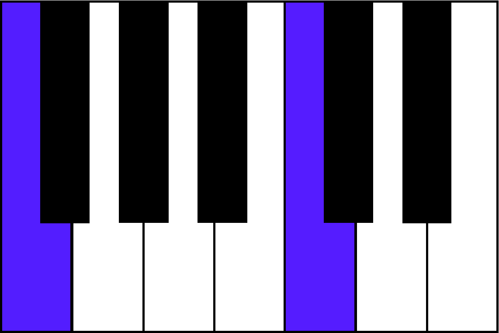
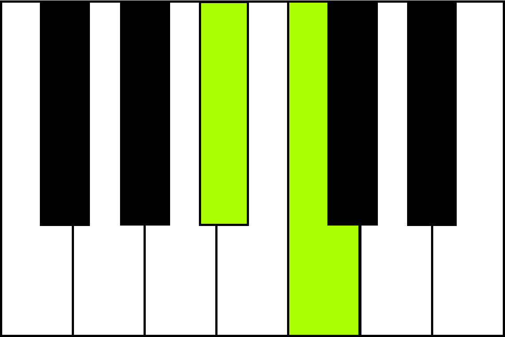
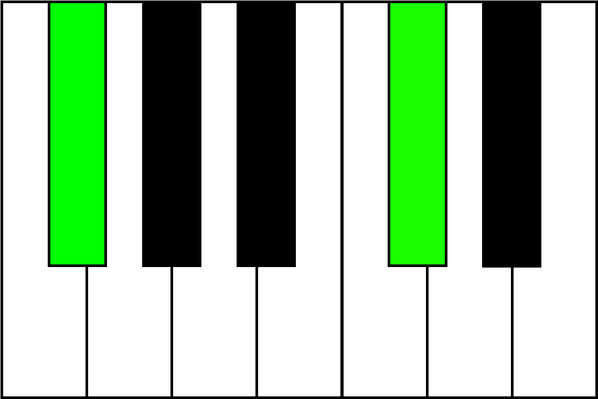
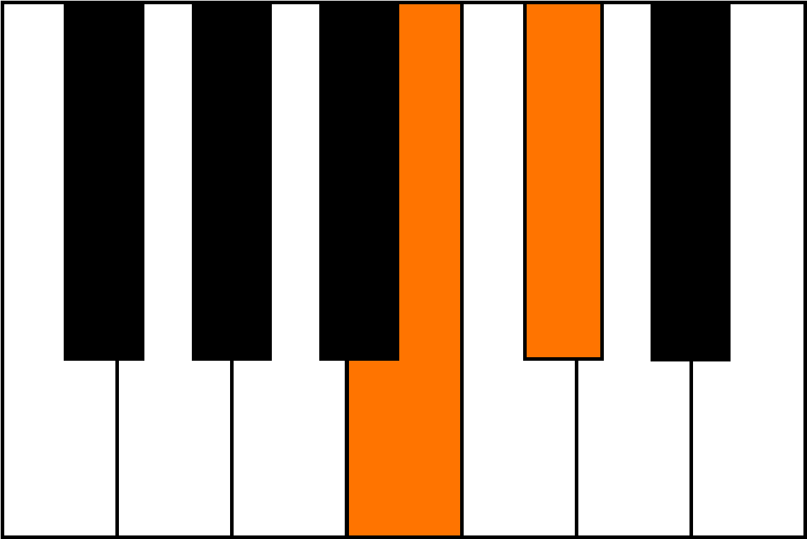

3 Note Songs
These songs use only the first 3 notes of the major scale (do, re and mi), which are much more common in United States folk music than the mi-sol-la combination favored by music teachers trained in traditional Kodaly methods (which are based on Hungarian folk music). I find that do-re-mi songs have a wider range of character than mi-sol-la songs which sound all the same.
Melodic Features
All of these songs are in major, but can easily be changed to minor by instructing the student to play the third (highest) note one half step lower. There are equal numbers of songs in duple and triple meters. They are notated using 1-octave, color-coded keyboard diagrams.
Harmonic Features
These songs use only the tonic (I) and dominant-seventh (V7) chords. For young students with small hands and less fine motor control, start by teaching, a stripped down, two-note version of each chord. I use a fifth (root + fifth) for the tonic chord, and a major second (seventh + root) for the dominant-seventh.
I

white key tonic
V7

white key dominant
I

black key tonic
V7

black key dominant